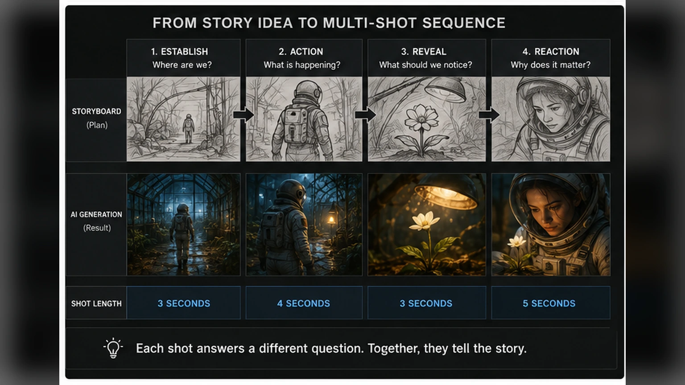
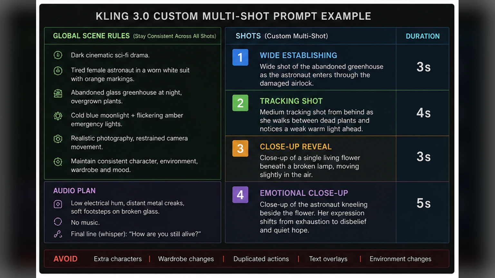

AI video generators have become very good at producing one impressive shot.
A character walks through a smoky hallway. A spaceship passes over a city. A product rotates beneath dramatic lighting. Everything looks cinematic for several seconds, and then the clip ends.
That is useful, but it is not the same as telling a story.
A real scene usually needs coverage. It needs a wide shot to establish the location, a medium shot to show the action, a close-up to reveal emotion and a cutaway that gives the editor somewhere to go.
Kling VIDEO 3.0 is interesting because it begins addressing that larger problem.
Its Multi-Shot feature can automatically plan transitions, framing and camera-angle changes from a prompt. Its Custom Multi-Shot mode gives creators more direct control over individual shots and their durations. Kling also supports generations up to 15 seconds, native audio and Element references intended to keep characters, objects and environments more consistent across a sequence.
That is a much bigger creative opportunity than simply generating a longer clip.
It also introduces a new way to make a mess.
If every shot, action, camera movement, sound effect and line of dialogue gets thrown into one giant paragraph, the model still has to guess which details matter most. A multi-shot generator is not a replacement for planning.
It is a reason to plan more clearly.
Multi-shot does not automatically mean good coverage
Turning on Multi-Shot allows Kling 3.0 to interpret the prompt as a scene rather than one continuous camera take.
In the standard Multi-Shot mode, the model can decide where cuts should happen and how the framing should change. That is useful when the scene is simple and I am comfortable giving the model some freedom.
Custom Multi-Shot is more useful when the sequence already has a clear structure.
Instead of asking for “a cinematic scene,” I can describe individual shots and assign time to each one.
That distinction matters.
A cinematic-looking image is mostly about visual quality.
A cinematic sequence is about the relationship between shots.
The first shot creates context. The second changes the information. The third creates a reaction or payoff. If every shot communicates the same thing from a slightly different angle, the sequence may look expensive while accomplishing almost nothing.
Before opening Kling, I ask a very basic question:
What changes during this scene?
If the answer is “nothing,” I probably do not need multiple shots.
Start with one simple story beat
Fifteen seconds is longer than many AI video generations, but it is still not a feature film.
Trying to include an introduction, conflict, emotional reversal, explosion, chase scene and thoughtful conclusion inside one generation is how you end up with visual soup.
I plan one story beat.
For example:
- A detective notices a clue. - A musician walks onto an empty stage. - A character opens a mysterious package. - A product transforms from its closed state to its working state. - Two people exchange a short line of dialogue. - A spaceship emerges from cloud cover. - A creature realizes it is being watched.
Each of those contains a small change.
The detective begins without the information and ends with it.
The musician begins backstage and ends in front of the audience.
The product begins inactive and ends in use.
That is enough structure to support several shots without cramming an entire screenplay into 15 seconds.
Write the scene before writing the shots
Before creating a shot list, I write one plain sentence describing the complete scene.
For example:
“A tired astronaut enters an abandoned greenhouse, notices one living flower beneath a broken lamp and kneels beside it in disbelief.”
That sentence contains:
- A character - A location - An action - A discovery - An emotional response
Now I can divide the idea into coverage.
Shot 1 establishes the greenhouse.
Shot 2 follows the astronaut entering.
Shot 3 reveals the flower.
Shot 4 shows the astronaut’s reaction.
The shots exist to communicate the sentence.
They are not random opportunities to request another camera move.

Give every shot a job
When I build a Custom Multi-Shot sequence, every shot should answer a different question.
The establishing shot
Where are we?
This is usually the widest shot. It introduces the environment, scale, time of day and basic relationship between the subject and the location.
It does not need to last long.
A one- or two-second establishing shot may be enough for a short sequence.
The action shot
What is happening?
This might be a medium shot, tracking shot or over-the-shoulder view. It should show the action clearly instead of hiding it beneath a camera trick.
The detail or reveal
What should the audience notice?
A close-up of an object, hand, expression or environmental detail can direct attention toward the information that changes the scene.
The reaction or payoff
Why did the moment matter?
A reaction shot gives emotional meaning to the action. Without it, the sequence may show an event but never communicate how anyone feels about it.
Not every sequence requires these exact four shots.
The principle is what matters: each cut should reveal new information.
Budget the 15 seconds before prompting
Kling VIDEO 3.0 supports flexible duration up to 15 seconds, and Custom Multi-Shot allows duration to be described at the shot level.
I treat those seconds like a budget.
A simple sequence might look like this:
- Shot 1: 3 seconds - Shot 2: 4 seconds - Shot 3: 3 seconds - Shot 4: 5 seconds
That totals 15 seconds.
The final shot gets more time because it contains the emotional payoff.
Another scene might need five faster shots. A conversation may need longer reaction shots. An action sequence might benefit from short cuts but still require enough time for the movement to read.
The model cannot make every shot feel spacious if I assign too much action to too little time.
“Character enters, crosses the room, opens a box, reacts, turns toward the camera and runs away” is not a three-second shot.
It is a request for motion blur and regret.
Keep the visual rules outside the shot list
I separate the scene’s global rules from the instructions for each shot.
The global section defines what should remain consistent:
- Character appearance - Wardrobe - Environment - Time of day - Lighting style - Color palette - Lens character - Visual medium - Audio atmosphere - Overall mood
The shot list then describes only what changes.
Here is a simplified structure:
“Dark cinematic science-fiction drama. The same tired female astronaut appears throughout, wearing a worn white pressure suit with orange shoulder markings and a scratched clear helmet. Abandoned glass greenhouse at night, overgrown plants, cold blue moonlight mixed with flickering amber emergency lights. Realistic photography, restrained camera movement, consistent character and environment.”
Then the shots:
“Shot 1 (3s): Wide establishing shot of the abandoned greenhouse as the astronaut enters through a damaged airlock.
Shot 2 (4s): Medium tracking shot from behind as she walks between dead plants and notices a weak warm light ahead.
Shot 3 (3s): Close-up of a single living flower beneath a broken lamp, moving slightly in the air.
Shot 4 (5s): Close-up of the astronaut kneeling beside the flower. Her expression shifts from exhaustion to disbelief and quiet hope.”
The global description creates continuity.
The shot descriptions create progression.

Use Elements for the things that cannot drift
The more shots a sequence contains, the more opportunities there are for the subject to change.
A jacket gains a collar. A prop changes size. A room rearranges itself. A character’s face starts the scene as one person and ends it looking like that person’s suspiciously well-rested cousin.
Kling’s Element system is designed to help anchor important characters, objects and scenes.
The official VIDEO 3.0 guides describe support for image, multi-image and video-based Element references. The Omni model also supports combining several reference types and using character Elements across changing shots and camera angles.
I would prioritize Elements for anything the viewer will track across the sequence:
- The main character - A hero product - A specific vehicle - A creature - A recognizable prop - A recurring room or location - A costume with important details
Not every background object needs its own reference.
Trying to lock every coffee cup, wall panel and distant plant may create more complexity than value.
The goal is to protect the visual anchors of the scene.
Build better character references
A single front-facing portrait does not contain enough information for every camera angle.
For recurring characters, I prefer a small reference set:
- Front view - Three-quarter view - Side view - Full-body image - Neutral expression - One image showing the costume clearly
Kling VIDEO 3.0 also supports creating character Elements from uploaded video, and the official guide recommends footage containing multiple viewing angles.
That makes sense.
The model has fewer hidden details to invent when the reference already shows the character from several sides.
For a project with repeated characters, I would spend more time preparing the Element than endlessly repairing identity drift later.
Consistency begins before video generation.
Avoid unnecessary camera gymnastics
Multi-shot scenes do not require every shot to contain a dramatic camera move.
A locked wide shot followed by a simple close-up may tell the story better than a drone orbit, crash zoom, handheld push-in and barrel roll competing inside 15 seconds.
I keep camera instructions readable:
- Static wide shot - Slow push-in - Gentle tracking shot - Over-the-shoulder shot - Low-angle medium shot - Close-up - Slow pan - Subtle handheld movement
The camera should support the information in the shot.
If the audience needs to study an object, the camera should not be performing parkour.
If the moment is emotional, a quiet close-up may be stronger than a sweeping crane move.
Cinematic does not mean constantly moving.
Sometimes cinematic means knowing when to sit still.
Do not duplicate the same action across shots
A common multi-shot mistake is describing the complete action in every shot.
For example:
“Shot 1: The man opens the door and enters.
Shot 2: Close-up as the man opens the door and enters.
Shot 3: Side view of the man opening the door and entering.”
That may cause the action to restart after every cut.
Instead, treat each shot as the next piece of time:
“Shot 1: Wide shot. The man approaches the locked workshop door.
Shot 2: Close-up. His gloved hand inserts an old brass key and turns it.
Shot 3: Interior medium shot. The door opens and he steps into the dark workshop.”
The action progresses.
The sequence does not repeatedly respawn the character outside the door like a confused video-game checkpoint.
Native audio should be planned with the picture
Kling VIDEO 3.0 can generate native audio alongside the visuals.
That can include dialogue, ambient sound and scene-specific effects. The official guide also describes more precise control over which character is speaking in multi-character scenes.
Audio is not something I would bolt onto the end of the prompt as an afterthought.
I include an audio plan with the scene:
- Background atmosphere - Important sound effects - Dialogue - Voice tone - Moments that should remain quiet - Music, if appropriate
For the greenhouse example:
“Audio: low electrical hum, distant metal creaks, soft footsteps on broken glass and a faint airflow through the greenhouse. No music. In the final shot, the astronaut whispers, ‘How are you still alive?’”
That is enough.
I would not request orchestral music, thunder, radio chatter, alarms, breathing, six sound effects and a speech unless the scene genuinely needs them.
Sound competes for attention just like visuals do.
Dialogue needs room to breathe
A 15-second sequence cannot comfortably contain a page of dialogue.
Even when a model can generate the words, the pacing may feel rushed and the visual action may become secondary.
I keep spoken lines short.
One or two sentences are usually enough for a scene this length.
I also assign the dialogue to a specific shot and character:
“Shot 3 (4s): Close-up of Maya looking toward Daniel. Maya says softly, ‘You knew this would happen.’”
That is clearer than placing several lines at the bottom of the prompt and hoping the model decides who owns them.
For conversations, classic coverage still works:
- Two-shot - Close-up of speaker one - Close-up of speaker two - Reaction shot - Return to two-shot
The technology is new.
The grammar of editing is not.
Automatic Multi-Shot is useful for discovery
Custom Multi-Shot offers more control, but I would not ignore the automatic mode.
Automatic Multi-Shot can be useful during exploration.
I can provide the complete scene and see how Kling interprets the coverage. Sometimes the model may choose a framing or transition I had not considered.
That result can become a rough moving storyboard.
I can then identify what worked and rebuild the idea with Custom Multi-Shot instructions.
My process would be:
1. Generate an automatic Multi-Shot version. 2. Study the selected coverage. 3. Identify the strongest shot or transition. 4. Rewrite the scene as a controlled shot list. 5. Generate a Custom Multi-Shot version. 6. Compare the storytelling, not merely the image quality.
The automatic version becomes a collaborator.
The custom version becomes the directed take.
One generation is still not the final edit
Kling describes Multi-Shot as a way to create a structured sequence in one generation.
That does not mean I would drop the result directly into a finished project.
I would still inspect:
- Continuity between shots - Character identity - Eyelines - Screen direction - Action timing - Audio transitions - Dialogue sync - Unwanted jump cuts - Repeated frames - Background changes - The exact frame where each cut occurs
Then I would take the result into an editor.
A few frames trimmed from a shot can completely change the pacing. A different audio transition can make a cut feel intentional. A reaction held half a second longer can turn a confusing moment into a clear one.
AI can generate the footage.
Editing decides whether the footage communicates.
Screen direction still matters
When a character moves from left to right in one shot, cutting to a shot where that character suddenly moves right to left can make the action feel reversed.
Traditional filmmaking calls this screen direction.
AI generators may not consistently preserve it unless the prompt gives clear spatial information.
I use phrases such as:
- The character continues moving from left to right - Camera remains on the same side of the action - She looks toward screen left - The vehicle exits frame right - Reverse angle from behind the second character - Maintain consistent eyelines
These details may sound fussy.
They are less fussy than watching a character appear to teleport across an imaginary line because both shots looked individually cool.
Use one hero sequence, then build around it
For a music video, short film or project like The Orb, I would not expect a single 15-second generation to create the complete finished scene.
I would use Multi-Shot to generate one coherent unit.
That unit might be:
- A character entering a location - A short conversation - A reveal - A transformation - A memory fragment - A product demonstration - A miniature action beat
Then I would build surrounding clips separately.
The multi-shot generation becomes the backbone of the moment. Additional close-ups, inserts, environmental shots and reaction shots can be created afterward and used to improve the edit.
This keeps the workflow modular.
If one generated section fails, the entire sequence does not need to be rebuilt.
A reusable Custom Multi-Shot template
This is the basic structure I would use:
“STYLE AND CONTINUITY:
[Visual style]. The same [character or subject description] remains consistent throughout. [Location description]. [Time of day and lighting]. [Color palette]. [Camera and lens character]. Maintain consistent wardrobe, props, environment and screen direction.
SHOT 1 ([duration]):
[Shot size and angle]. [Subject action]. [Camera movement]. [Important environmental information].
SHOT 2 ([duration]):
[Shot size and angle]. [Next action or new information]. [Camera movement]. Maintain continuity from the previous shot.
SHOT 3 ([duration]):
[Detail, reveal or dialogue]. [Specific speaker and voice tone if needed]. [Relevant sound].
SHOT 4 ([duration]):
[Reaction or payoff]. [Final camera framing]. End on [specific visual state].
AUDIO:
[Ambient sound]. [Important effects]. [Dialogue with speaker attribution]. [Music direction or no music].
AVOID:
No extra characters, no wardrobe changes, no duplicated actions, no text overlays, no changes to the main environment.”
The template is not magic.
Its purpose is to separate different kinds of information so the prompt is easier to interpret and easier for me to revise.
My practical Kling 3.0 workflow
My complete workflow would look like this:
1. Define one story beat that can fit inside 15 seconds. 2. Write the complete scene in one plain sentence. 3. Identify the character, object and environment references that must remain consistent. 4. Create or select strong Elements for those subjects. 5. Decide whether the first attempt should use automatic Multi-Shot or Custom Multi-Shot. 6. Break the scene into shots that reveal different information. 7. Assign a realistic duration to each shot. 8. Put global visual rules above the shot list. 9. Describe action as a continuous progression instead of restarting it after each cut. 10. Keep camera movement simple and motivated. 11. Add a restrained audio plan. 12. Attribute dialogue to a specific character and shot. 13. Generate the sequence. 14. Evaluate storytelling, continuity and pacing separately from visual quality. 15. Revise only the weak shots or instructions. 16. Bring the result into an editor. 17. Trim the cuts, repair audio transitions and add supporting footage. 18. Stop calling it “finished in one click” because the editor can hear you lying.
The real upgrade is scene structure
The most important part of Kling VIDEO 3.0 is not that it can fit several camera angles into one generation.
The important part is that AI video is beginning to understand scene structure.
That moves the workflow closer to filmmaking and farther away from generating isolated visual tricks.
The model can plan shots, maintain referenced Elements, generate native audio and give creators more control over timing.
The artist still has to decide what the scene is about.
We still need to choose where the audience looks, when information is revealed, how long a reaction should last and whether a cut improves the story.
Multi-Shot does not eliminate directing.
It finally gives us something more interesting to direct.
More AI video workflows and production articles are available on the [JasonArts blog](https://www.jasonarts.com/blog).
Sources
Kling AI — VIDEO 3.0 Model User Guide: https://kling.ai/quickstart/klingai-video-3-model-user-guide
Kling AI — VIDEO 3.0 Omni Model User Guide: https://kling.ai/quickstart/klingai-video-3-omni-model-user-guide
Kling AI — Motion Control User Guide: https://kling.ai/quickstart/motion-control-user-guide
Kling AI — Creative Platform: https://kling.ai/